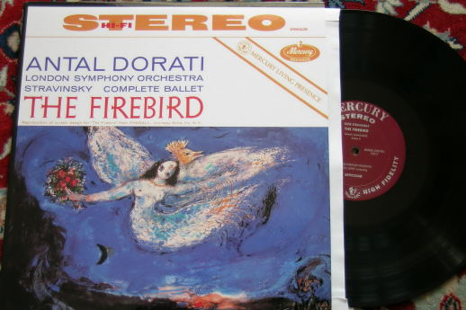
MERCURY SR90226 (Classic Rec. reissue)
Stravinsky “The Firebird” (complete)
Antal Dorati London Symphony Orchestra
Sound eng. C.R. Fine & W.Cozart
This is my best record ever. It is difficult to choose only one record because you can like it for one parameter and another for others, but this record excels in everything. Of course it is a true MERCURY, which means very “fast” sound, detailed, powerful and with that typical high level noise floor.
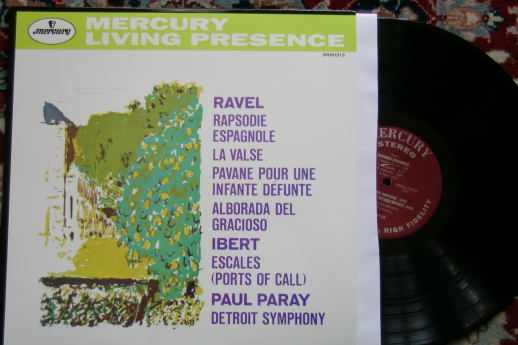
MERCURY SR90313 (Classic Rec. reissue)
Ravel “Rapsodie Espagnole” and others
Paul Paray Detroit Symphony
Sound eng. C.R. Fine & W.Cozart
This is another great MERCURY recording, which exalts the rich colour palette of the Ravel music. The Rapsodie is simply astonishing.
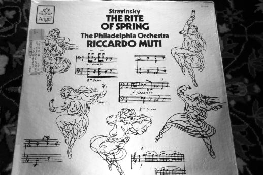
Angel SZ37646 (waiting the MFSL 1-519)
Stravinsky “The rite of spring” (ballet)
Riccardo Muti Philadelphia Orchestra
Sound eng. M. Gray
This is not the 200$ MFSL 1-519 reissue but the 7$ ORIGINAL Angel record. None want to buy it (neither for 5$) but I can assure you that my copy have an incredible dynamic and impressive bass response. Where I feel that the OMR copy can be much better is in the high frequency clearness, which tend to become “harsh” in the full orchestra passages. So, I guess that the OMR is like to add true colours to this B&W nice picture...
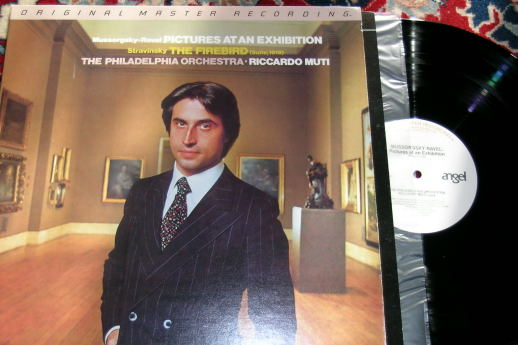
Angel - OMR MSFL 1-520
Mussorgsky “Pictures at an Exhibition” +
Stravinsky “Firebird” (suite)
Riccardo Muti Philadelphia Orchestra
Sound eng. M. Gray
The Original Master Recording were probably the most “audiophile-oriented” records ever made. This particular one (together with his brother MFSL 1-519, which I still don't have...) is the most famous. For now it is the most expensive record I have ever bought, but it deserves any $!
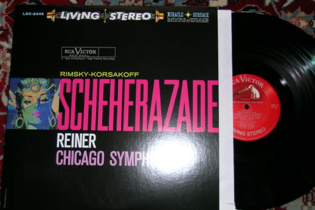
RCA LSC2446 (Classic Rec. reissue)
Rimsky-Korsakov “Scheherazade”
Fritz Reiner Chicago Symphony Orchestra
Sound eng. L. Layton & R. Mohr
I love the big sound of this recording.
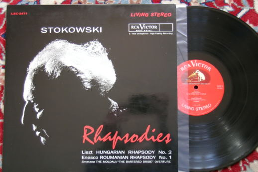
RCA LSC2471 (Classic Rec. reissue)
Liszt – Enesco “Rhapsodies”
Leopold Stokowsky Chicago Symphony Orch.
Sound eng. R. Simpson
This is probably not regarded as one of the best Living Voice products, but I found that this record can really transmit the Stokowsky energy.
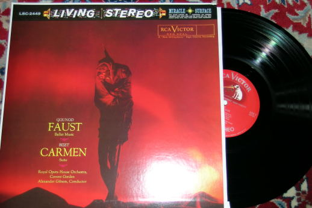
RCA LSC2449 (Classic Rec. Reissue)
Bizet Carmen + Gounod Faust
Alexander Gibson Royal Opera House Orch.
Sound eng. K. J. Wilkinson
That is probably the record most evaluated from the italian “record scout” school, founded by Stefano Rama. In reality it is a DECCA recording and, may be, it is for that reason that US collectors does not regard it as “the best”?
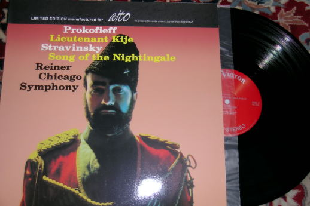
RCA LSC2150 (Classic Rec. Reissue)
Stravinsky “Sound of the Nightingale”
Fritz Reiner Chicago Symphony Orchestra
Sound eng. L. Layton
This is a typical example of record with variable quality: the Prokofieff side is not even comparable with the great Stravinsky one.
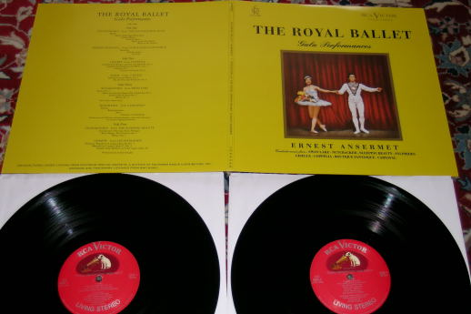
RCA SORIA LDS6065
AA.VV. “The Royal Ballet”
Ernest Ansermet Royal Opera House Orch.
Sound eng. K. J. Wilkinson
This sound is quite different from the powerful and dynamic RCA sound. It is much more “brilliant” and “detailed”. I like in particular the Cajkovsky tracks.
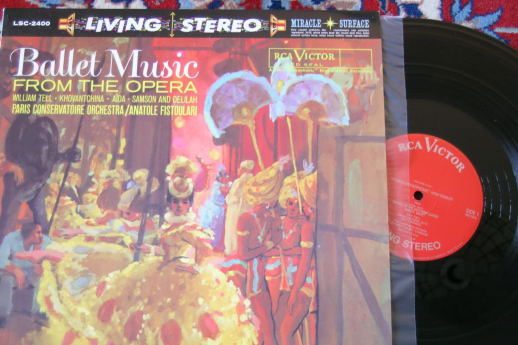
RCA LSC2400
AA.VV. “Ballet Music from the Opera”
Anatole Fistoulari Paris Conservatoire Orch.
Sound eng. K. J. Wilkinson
Do you want to prove a real emotion? Then try to listen the Saint-Saens “Baccanale” at high volume!
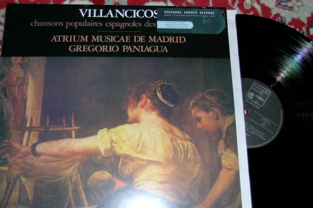
HARMONIA MUNDI FRANCE HM1025 (Speakers Corner reissue)
AA.VV. “Villancicos”
Gregorio Paniagua Atrium Musicae de Madrid
Sound eng. J.-F. Pontefract
This record has the wonderful sound of the more famous Folia, but the musical program is something less “repetitive” and for that reason I prefer this one. This is a typical “around 1980” high-end recording, when the high resolution and soundstage were the most important parameters. You can really think to have the musicians in your living room!
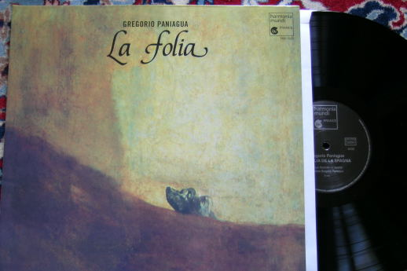
HARMONIA MUNDI FRANCE HM1050 (Speakers Corner reissue)
AA.VV. “La Folia de la Spagna”
Gregorio Paniagua ensamble
Sound eng. J.-F. Pontefract
This is probably one of the most famous high-end recording, and probably the most wanted of all the Harmonia Mundi, together with “Tarentule-Tarentelle” (HM379, recorded by A. Paulin) made by the same group, essentially the Paniagua family.
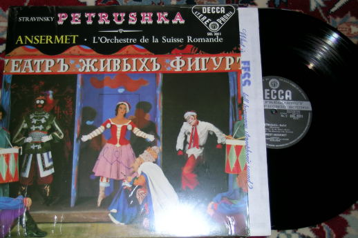
DECCA SXL2011 (Speakers Corner reissue)
Stravinsky “Petrushka”
Ernest Ansermet Orchestre de la Suisse Romande
Sound eng. ?
This is another Stravinsky opera. Probably he (and other russian colleagues) are the most “audiophile oriented” composers. Can You call them “composers for crazy people”?
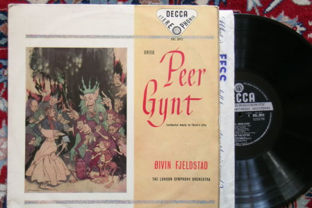
DECCA SXL2012 Wbg
Grieg Peer Gynt (suite)
Oivin Fjeldstad London Philharmonic Orch.
Sound eng. ?
I'm not sure if this is one of the best recording made by DECCA, but it is one which I like very much also for the music program.
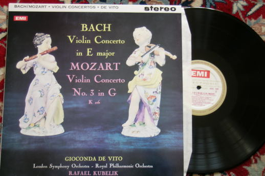
EMI ASD429 (Testament reissue)
Mozart violin concert n3 KV216
Gioconda De Vito,
Rafael Kubelik Royal Philharmonic Orchestra
Sound eng. ?
This record probably does not sound so good as the others in this list, but the De Vito performance is so magic that you forget everything else. The Bach side is much worse than Mozart.
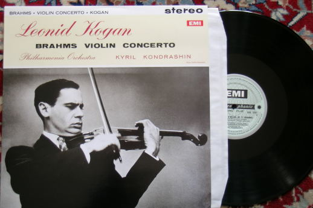
EMI SAX2307 (Testament reissue)
Brahms violin concert
Leonid Kogan
Kyril Kondrashin Philharmonia Orchestra
Sound eng. ?
Another wonderful performance recorded very well and reissued on heavy vinyl.

RCA
- CHESKY CR-2
Rachmaninov concert n2
Earl Wild,
Jascha Horenstein Royal Philharmonic
Sound eng. K. J. Wilkinson
Sometimes RCA and DECCA exchanged their best men and so happened that this RCA record (very well reissued by Chesky in 1986) was recorded by the DECCA guru Wilkinson (as happened for the three RCA above).

REFERENCE
RECORDING RR17
Stravinsky “L'Histoire du soldat” +
Rimsky-Korsakov “Capriccio Espagnol”
Chicago Pro Musica
Sound eng. K. O. Johnson
Here we are in 1985 and the audiophile label Reference Recording has done one of their best records. Unfortunately they do not do vinyls anymore...
Updated April 2007
To be continued?